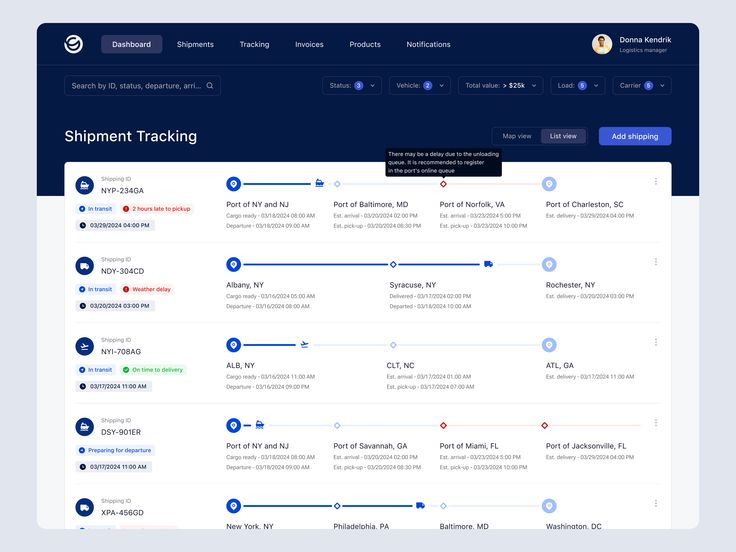
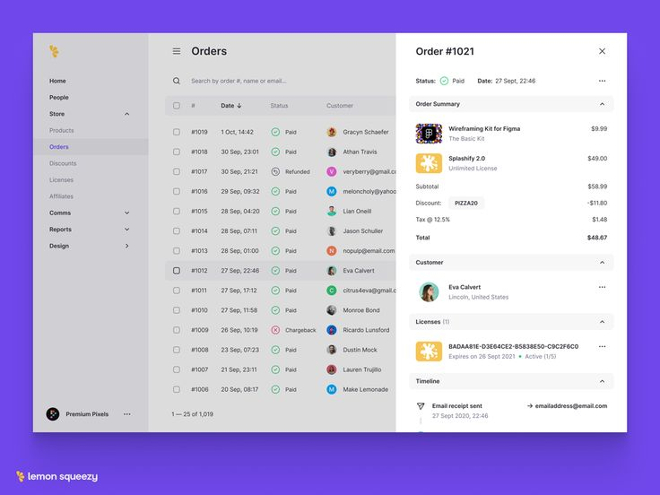
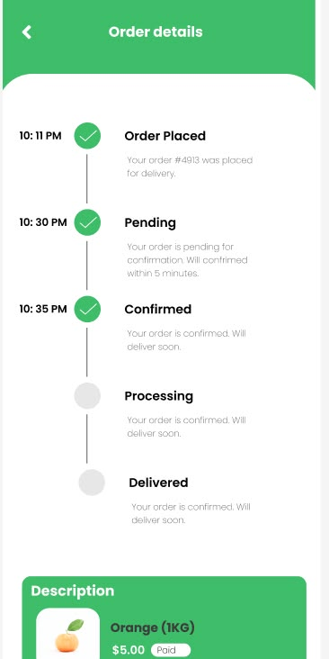

Hồ sơ lệnh sản xuất: làm lại
Đã chọn A, 12/10 Đi cặp với màn Theo dõi sản xuất (đã chọn A). Theo dõi trả lời "đơn của tôi đang tới đâu", một dòng là một đơn đang chạy. Hồ sơ lệnh để TRA CỨU từng lệnh, kể cả lệnh đã đóng hay đã giao xong từ lâu. Cả hai màn cùng luật nhìn thấy, cùng chỉ để xem, cùng một kiểu routing dọc. Ba phương án A, B, C bên dưới, mỗi phương án bám một mẫu tham khảo. Chưa đụng code app.
Logic tôi hiểu (bạn gật thì mới làm)
- Ai thấy lệnh nào: lệnh thuộc đơn mà người đó thấy ở Đơn hàng bán. Cùng luật với Theo dõi, không còn phạm vi riêng của Hồ sơ lệnh.
- Một dòng là một LỆNH, gồm cả lệnh đã đóng và đã giao đủ. Có lọc theo kỳ (ngày phát hành), theo khách, theo người phụ trách, phân trang ở máy chủ như các danh sách chứng từ khác.
- Chỉ xem. Nút duy nhất còn lại là In phiếu công nghệ, chỉ hiện với người có quyền sản xuất. Kinh doanh không thấy nút này.
- Hồ sơ một lệnh giữ bốn thứ: lệnh của đơn nào và khách nào, routing với trạng thái từng bước (giống ngăn Theo dõi), kết quả sau xưởng (KCS cuối, nhập kho, giao), và quy cách rút còn một dòng.
- Bỏ: máy, người đứng máy, giờ kế hoạch và thực tế, số vào ra từng bước, bảng vật tư (chỉ còn một câu khi thiếu), lịch sử giao người, nhật ký 7 loại, phiên bản, nhóm thành phẩm.
Giữ gì, bỏ gì
so với màn Hồ sơ lệnh đang chạy| Đang có | Ở màn mới | Vì sao |
|---|---|---|
| Danh sách: Lệnh, Ngày tạo, Hạn SX, Khách, Đơn, Sản phẩm, Số lượng, Trạng thái | Giữ, đổi Hạn SX thành Hạn giao | Kinh doanh hứa khách ngày giao. Hạn xong sản xuất là mốc nội bộ của điều độ. |
| Bốn tab Tất cả, Đang sản xuất, Sau sản xuất, Đã giao đủ | Giữ | Đúng cách kinh doanh chia việc: đang làm, chờ kho chờ giao, xong. |
| Đầu hồ sơ: thẻ Khách, Đơn, Phiên bản, Nhóm | Giữ Khách, Đơn; bỏ Phiên bản, Nhóm | Phiên bản và nhóm thành phẩm chỉ người lập lệnh cần. |
| Ba ô Tiến độ, Hạn xong sản xuất, Đã giao khách | Đổi thành Số lượng, Hạn giao, Sản xuất | Câu "ước theo thời lượng kế hoạch vì chưa ghi sản lượng" đang sai trong vài trường hợp; màn mới chỉ ghi % hoặc "Xong 11/10". |
| Danh sách cảnh báo (sự cố, KCS không đạt, vật tư) | Gộp thành một câu Đang vướng | Cùng luật với Theo dõi. |
| Mục Công đoạn: bảng 7 cột (Bước, Trạng thái, Máy người, Kế hoạch, Thực tế, Vào ra, Tốt lỗi) bung từng mẻ | Thay bằng routing dọc | Mỗi bước còn tên, ai làm, trạng thái bằng chữ. Lỗi chỉ hiện khi có. |
| Mục Quy cách: 16 ô | Còn một dòng | Giấy, khổ thành phẩm, màu in, gia công. Đủ để nhận ra lệnh, kinh doanh đã xem đủ lúc tính giá. |
| Mục Vật tư: bảng tồn, nhu cầu, đã cấp, thiếu | Bỏ | Thiếu thì hiện trong Đang vướng. Đủ thì im. |
| Mục Sau sản xuất: KCS cuối, Nhập kho, Giao hàng | Giữ, gọn còn ba dòng | Trả lời "làm ra bao nhiêu, đạt bao nhiêu, kho có bao nhiêu, giao chưa". |
| Mục Nhật ký 7 loại | Bỏ | Theo góp ý 11/10: mốc thời gian không cần. |
Tham khảo đã mở trên Pinterest
2 lượt tìm, khoảng 45 mẫu, giữ 4Tìm "work order details page dashboard ui" và "manufacturing production order detail ui routing steps". Lượt thứ hai ra phần lớn là sơ đồ minh hoạ, không dùng được. Không đăng nhập Pinterest, chỉ xem ảnh pin.




A. Danh sách lệnh có tuyến bước trong dòng
theo h1Mỗi lệnh một dòng cao hơn chút (52px) để chứa tuyến bước nằm ngang: chấm nối nhau, tên bước ngắn ngay dưới chấm. Chưa mở hồ sơ đã đọc được lệnh đang ở bước nào, bước nào thuê ngoài. Lệnh gia công trọn gói chỉ có một chấm. Bấm dòng mở ngăn hồ sơ (mục "Hồ sơ một lệnh" ngay dưới). Hợp khi người xem hay hỏi "lệnh này tới bước nào rồi".
Hồ sơ lệnh sản xuất
| Lệnh | Đơn | Khách hàng | Mặt hàng | Số lượng | Các bước | Trạng thái | Hạn giao |
|---|---|---|---|---|---|---|---|
| LSX26-0011* | DH007 | VINAMILK | Hộp sữa 180ml | 10.000 cái | Cắt tờIn 4 màuCán màngBế hộpDán hộpĐóng gói |
Đang dừng | 15/10 |
| LSX26-0013* | DH008 | DƯỢC HẬU GIANG | Hộp thuốc 10 vỉ | 20.000 cái | Cắt tờIn 4 màuCán màngBế hộpDán hộpĐóng gói |
Đang sản xuất | 20/10 |
| LSX26-0005 | DH003 | CAFÉ KATINAT | Tờ rơi A4 4/4 | 3.000 tờ | Gia công trọn gói ở Thành Công |
Thuê ngoài | 27/10 |
| LSX26-0003 | DH002 | BIBICA | Ruột sách A5 64 trang | 1.000 cuốn | Cắt tờBài in 4 màuGấpBắt tay, keoXén 3 mặt |
Đã đóng | 6/11 |
| LSX26-0004 | DH002 | BIBICA | Bìa sách A5 | 1.000 cuốn | Cắt tờBài in 4 màuCán màngCắt thành phẩm |
Đã đóng | 6/11 |
| LSX26-0012* | DH007 | VINAMILK | Thùng carton 5 lớp | 500 cái | Gia công trọn gói ở Minh Phát |
Đã nhập kho | 15/10 |
| LSX26-0002 | DH001 | CAO LỢI HƯNG | Hộp kem 50ml | 5.000 cái | Gia công trọn gói |
Đã giao đủ | 30/10 |
Chấm: xám đặc là xong, xanh lá là đang chạy, đỏ là đang dừng, viền cam là thuê ngoài, vòng to là bước hàng đang nằm. Chấm có viền đỏ mảnh (Cán màng của LSX26-0004) là bước có lô KCS không đạt. Dấu * là lệnh giả định; năm lệnh còn lại là số thật trên DB dev.
Hồ sơ một lệnh
ngăn bên phải của A, cùng khuôn ngăn Theo dõiCùng khuôn với ngăn của Theo dõi để người dùng không phải học hai kiểu: đầu ngăn, rồi routing dọc, rồi đoạn sau xưởng. Khác ở chỗ đây là MỘT lệnh nên có thêm dòng quy cách, số liệu sau xưởng đầy đủ hơn (KCS cuối nhận bao nhiêu, đạt bao nhiêu), và nút In phiếu công nghệ cho người có quyền sản xuất.
Các bước
- Xong 10/10Cắt tờCắt 2
- Xong 11/10Bài in 3 màu 4 màu (CMYK)Nhóm thợ in máy 4 màu
- Xong 11/10GấpThuê ngoài: Cơ sở Gia công Cán màng Thành Công
- Xong 11/10Bắt tay + vào keoThành phẩm / KCS
- Xong 11/10Xén 3 mặtCắt 1
Sau xưởng
| KCS lần cuối | Nhận 250, đạt 240, không đạt 10 | 11/10 |
|---|---|---|
| Nhập kho | Kho đã nhận 240 cuốn (gộp với bìa LSX26-0004) | DNN00074 |
| Giao khách | Chưa giao, 0 trên 1.000 |
B. Danh sách gọn, ngăn chia khối gập mở
theo h2Danh sách giữ nguyên độ đặc như hiện nay (dòng 40px, không có tuyến bước). Bấm lệnh thì ngăn mở bên phải mà danh sách vẫn thấy bên trái, bấm lệnh khác là ngăn đổi theo. Ngăn chia bốn khối có mũi tên gập mở: Tóm tắt, Các bước, Sau xưởng mở sẵn; Quy cách gập sẵn. Hợp khi người xem đi lần lượt nhiều lệnh, ví dụ dò hết lệnh của một đơn.
Hồ sơ lệnh sản xuất
| Lệnh | Đơn | Mặt hàng | Trạng thái |
|---|---|---|---|
| LSX26-0011* | DH007 | Hộp sữa 180ml | Đang dừng |
| LSX26-0013* | DH008 | Hộp thuốc 10 vỉ | Đang SX |
| LSX26-0005 | DH003 | Tờ rơi A4 4/4 | Thuê ngoài |
| LSX26-0003 | DH002 | Ruột sách A5 64 trang | Đã đóng |
| LSX26-0004 | DH002 | Bìa sách A5 | Đã đóng |
| LSX26-0012* | DH007 | Thùng carton 5 lớp | Đã nhập kho |
| LSX26-0002 | DH001 | Hộp kem 50ml | Đã giao đủ |
- Đơn
- DH002 ↗
- Khách
- CÔNG TY CỔ PHẦN BIBICA
- Phụ trách
- Huyên
- Số lượng
- 1.000 cuốn
- Hạn giao
- 6/11/2026 còn 26 ngày
- Đang vướng
- Đóng thiếu kho mới nhận 240 trên 1.000
- Xong 10/10Cắt tờCắt 2
- Xong 11/10Bài in 3 màu 4 màu (CMYK)Nhóm thợ in máy 4 màu
- Xong 11/10GấpThuê ngoài: Thành Công
- Xong 11/10Bắt tay + vào keoThành phẩm / KCS
- Xong 11/10Xén 3 mặtCắt 1
- KCS lần cuối
- Nhận 250, đạt 240, không đạt 10
- Nhập kho
- 240 cuốn, gộp với bìa
- Giao khách
- Chưa giao
C. Trang hồ sơ đầy đủ có cột phải
theo h3 và h4Giữ kiểu hiện nay là mở hồ sơ thành một trang phủ cả vùng làm việc, có nút Quay lại danh sách. Bên trái là các bước kiểu h4: giờ xong đứng bên trái chấm, tên bước và tổ bên phải. Cột phải là ba thẻ: Đơn hàng, Sau xưởng, Quy cách. Hợp khi in ra hoặc chiếu lên màn họp, đọc một lệnh cho kỹ. Đổi lại phải quay lại danh sách mới sang lệnh khác.
Các bước 5 trên 5 xong
- 10/10
16:53Cắt tờCắt 2 - 11/10
03:15Bài in 3 màu 4 màu (CMYK)Nhóm thợ in máy 4 màu - 11/10
03:16GấpThuê ngoài: Cơ sở Gia công Cán màng Thành Công - 11/10
03:32Bắt tay + vào keoThành phẩm / KCS - 11/10
03:42Xén 3 mặtCắt 1 - —Nhập kho thành phẩmKho đã nhận 240 trên 1.000 cuốn
- —Giao kháchChưa giao
Đơn hàng
- Đơn
- DH002 ↗
- Khách
- CÔNG TY CỔ PHẦN BIBICA
- Phụ trách
- Huyên
- Số lượng
- 1.000 cuốn
- Hạn giao
- 6/11/2026
Sau xưởng
- KCS cuối
- Nhận 250, đạt 240, không đạt 10
- Nhập kho
- 240 cuốn, gộp với bìa
- Đã giao
- 0
Quy cách giả định
- Giấy
- Couche 100 gsm
- Khổ
- 14,8 × 21 cm
- In
- 4/4
- Số trang
- 64
Phần máy chủ phải đổi
- Phạm vi: Hồ sơ lệnh hiện lọc theo người bán ghi trên đơn và theo quyền riêng của module. Đổi sang đúng điều kiện lọc của Đơn hàng bán (người phụ trách của khách đứng trước, có nhóm dùng chung). Màn chi tiết cũng chặn theo luật đó.
- Danh sách có tuyến bước (chỉ phương án A): mỗi dòng cần tên bước, trạng thái, thuê ngoài hay không, bước hàng đang nằm. Danh sách hiện cố ý không tính gì nặng; phần này chỉ đọc bảng bước và trạng thái việc, không chạy dự kiến xong, nên vẫn nhẹ.
- Lệnh gia công trọn gói gộp thành một bước "Gia công trọn gói" kèm tên nhà gia công, thay vì bày routing mẫu không ai ghi (LSX26-0002, LSX26-0005 hiện có 4 đến 6 bước rỗng).
- Hồ sơ trả về gọn hơn: bỏ vật tư, nhân lực, nhật ký khỏi gói trả về cho màn này; giữ thông tin lệnh, routing, KCS cuối, nhập kho, giao, và một câu đang vướng.
- Cột Hạn giao lấy từ đơn (hạn giao khách), thay cho Hạn SX.
Giả định
- Hồ sơ lệnh vẫn là một mục riêng ở thanh bên, cạnh Theo dõi sản xuất. Nếu bạn muốn gộp làm một (bấm mã lệnh trong ngăn Theo dõi là mở hồ sơ lệnh ngay trong đó) thì báo, mình vẽ lại.
- Nút In phiếu công nghệ giữ cho người có quyền sản xuất, vì tổ xưởng vẫn cần phiếu giấy.
- Lệnh có dấu * và quy cách của LSX26-0003 là giả định. Routing, giờ xong từng bước, KCS, nhập kho của LSX26-0003 và LSX26-0004 là số thật.